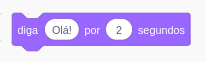
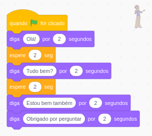
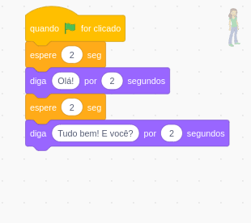

obs.: Lembre-se de mudar o idioma do Scratch clicando neste "globinho"
Em uma folha de rascunho, crie um diálogo interessante entre dois personagens.
O assunto do diálogo é livre, pode ser um personagem contando uma piada para o outro ou uma história.
Lembre-se de definir quais serão os dois personagens envolvidos no diálogo e pense em um cenário onde esse diálogo ocorrerá.
Vamos fazer um diálogo entre dois personagens que se movem no nosso cenário.
Então, sua primeira tarefa é colocar seus personagens e um cenário no Scratch. Clique nesses botões:
O botão da esquerda permite adicionar um novo personagem e o botão da direita, um cenário.
Então, em ambos os personagens o primeiro bloco de programação deve ser o bloco:
Depois deste bloco, devem vir os blocos de fala. Ou seja, os blocos "diga [...] por 2 segundos":

Usando esses blocos de "diga...", você vai montando o diálogo e adicionando as falas de cada personagem.
Então, adicione esses blocos "diga..." até você ter colocado o diálogo inteiro e clique na bandeira verde para ver os personagens falarem.
Se você reparar, agora os dois personagens estão falando um "por cima" do outro. Ou seja, um personagem não espera
o outro terminar de falar antes de começar a falar.
Então, precisamos adicionar blocos de "espere 1 seg" entre as falas.
Este bloco fará os personagens esperar esse tempo em segundos antes de fazer a próxima ação. Dessa maneira, conseguimos ir sincronizando
as falas dos personagens para eles nunca falarem por cima dos outros.
Este é um exemplo do início de um diálogo.
 
Note que nas duas imagens tem o personagem em "marca d'água" no canto direito para deixar claro em qual personagem está esta programação.
Agora é com você. Depois de seguir e observar este exemplo, faça o seu próprio diálogo. Faça um diálogo mais longo, com pelo menos 12 falas.
Além disso, faça também que os personagens se movimentem durante o diálogo. Ou adicione mais personagens ao diálogo.